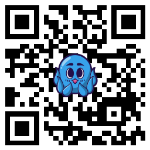

Donasi/Dukungan
Donasi & Dukungan
Jika Anda menyukai proyek-proyek yang saya buat dan ingin memberikan dukungan, Anda dapat melakukannya melalui metode di bawah ini. Setiap dukungan sangat berarti bagi kelanjutan pengembangan proyek saya.
QRIS (Dana/OVO/GoPay)

Pindai kode di atas menggunakan aplikasi pembayaran favorit Anda.
"Terima kasih atas segala bentuk dukungan yang diberikan. Semoga kebaikan Anda dibalas dengan yang lebih baik lagi." - Thio Saputra